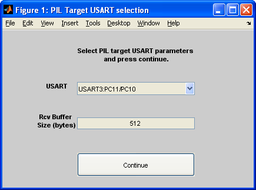

Readme
COPYRIGHT 2012 STMicroelectronics
Licensed under MCD-ST Liberty SW License Agreement V2, (the "License").
Read MCD-ST Liberty SW License Agreement V2.pdf
Contents
Package Description
This package contains all necessary files to quickly deploy application models in MATLAB and Simulink to STM32 F4 MCU.
Specific files included in the distribution are Simulink blockset libraries for STM32 F4 peripherals, Embedded Coder STM32 F4 configuration files (STM32F4xx.tmf and STM32F4xx.tlc), and PIL serial rtiostream and profiling functionalities.
Product version
STM32 Embedded Target has been developped for MATLAB R2013b version
MathWorks products required:
- MATLAB and MATLAB Coder
- Simulink and Simulink Coder
- Embedded Coder
The process from code generation to programing STM32 F4 MCU is fully automated and requires one of three following listed toolchains:
Package installation
STM32 Embedded Target functionalities are available as soon as STM32F4xx product folder and subfolders are added to the MATLAB path.
Type pathtool in the MATLAB Command Window and follow the stages below to settle the product.
- Click Add with subfolders... button of "Set Path" window.
- Select STM32F4xx folder (It contains this Readme file)
- Click OK
- Click Save button and close "Set Path" window
STM32 Embedded Target capabilities and functionalities are available now.
Package Overview
The contents of the STM32 Embedded Target package are the following one.
- blks: Simulink blockset library
- html: HTML help files for Simulink blockset library
- lib: "C" code libraries (CMSIS core and STM32F4xx peripherals driver)
- pil: PIL setting files and STM32F4 RtioStream
- rtw: Embedded Coder STM32 F4 configuration files
- script: Settings and configuration MATLAB scripts
- src: STM32 F4 MCU configuration "C" files
- STM32F4xxdemos: Simulink models for demo and test
- toolchain: Settings and configuration files for toolchains.
blks
Simulink blockset libraries specific files for STM32 F4 peripherals.
- logo repository contains ST.bmp file logo visible on every Simulink peripheral models.
- masks repository contains Simulink peripheral models parameters callback script.
- mdl repository contains Simulink peripheral models.
- mex repository contains mewx32 and mexw64 files for Simulink peripheral models
- tlc_c repository contains "C" code generation peripherals TLC scripts.
back
html
HTML and snapshots for Simulink peripheral models help description.
lib
- Cortex Microcontroller Software Interface Standard (CMSIS) V2.10 library.
Licensed under CMSIS END USER LICENCE AGREEMENT - STM32F4xx Standard Peripheral Driver "C" source code files.
back
pil
- +stm32F4xxpil repository contains STM32F4 configuration files for PIL and profiling functionalities.
- stm32F4xxSerialRtiostream repository contains "C" source driver files for PIL.
PC communication port used for PIL must be set with same parameters.
PC communication port used for PIL is a MATLAB preference of STM32F4xx group called COMPort.
Command is getpref('STM32F4xx') from MATLAB "Command Window" to see all STM32F4xx defined preferences.
Command is setpref('STM32F4xx','COMPort','COMx') from MATLAB "Command Window" to set PC PIL communication port to COMx (x = COM number).
Only COMPort preference may need to be changed.
STM32F4 USART communication port is set from popup window before PIL runs.
Default initialization communication timeout is set to 15sec.
Default receive communication timeout is set to 10sec (Take care if breakpoint is set during PIL debug)
Can be modified from lines 54,59 of ConnectivityConfig.m file.

rtw
rtw repository contains Embedded Coder STM32 F4 configuration
files:
- STM32F4xx.tmf template make file for building a PC-based stand-alone embedded real-time version of Simulink model using generated C code and one of the three available toolchains.
- STM32F4xx.tlc System target file used to define STM32F4xx option parameters.
back
script
Set of script files used to automatically initialize STM32F4 configuration model or used for RTW build process.
src
STM32F4 "C" application source files.
To be modified depending on application needs.
- RCC_Configuration.c used for STM32F4 clock configuration.
Default configuration is 168MHz (internal RC) - stm32f4xx_conf.h used to enable application peripheral header file inclusion.
- stm32f4xx_it.c(.h) used to define dumy IRQ handler.
Comments handler of interrupt defines from Simulink application models.
back
STM32F4xxdemos
This repository contains PIL demonstration Simulink models and STM32F4 peripheral test Simulink models.
- MotorControl contains motor control Simulink application model.
Used to demonstrate PIL communication and processing for motor control applications.
Field Oriented and Hall sensor application are based on ST Motor Control Evaluation board. - Pil contains typical IIR filtering example to verify and profile STM32 F4 execution results versus Simulink simulation behavior using PIL testing.
- Test contains STM32F4 peripherals model examples.
Dedicated to demonstrate build applications and flash STM32F4 target.
Not for PIL - CodeGeneration It is recommended to use this working directory as MATLAB "Current Folder" to run STM32F4xx Simulink application model.
It is not mandatory to set MATLAB "Current Folder" to THIS particular STM32F4xx\STM32F4xxdemos\CodeGeneration
but MATLAB "Current Folder" end path should be CodeGeneration
back
toolchain
This repository contains toolchains templates used to build "C" code generated project.
- ATOLLIC_TrueSTUDIO templates for TrueSTUDIO toolchain.
Automatic process up to start TrueSTUDIO IDE.
User has to manually download project and start debug. - IAR_Ewarm templates for EWARM toolchain. Automatic process up to start EWARM IDE and flash STM32F4 target.
- KEIL templates for MDK toolchain.
Fully automated process.
Modify xxx_Settings files to set breakpoint or remove automatic run after download.
User has to manually start debug.
back
Configuration & Settings
As soon as *STM32F4xx* product folder and subfolders has been added to the MATLAB path:
- STM32F4xx peripherals Simulink library is available.
- stm32F4xx.tlc system target file is available from Simulink model configuration, Code Generation, Target selection.
Crutial information are saved as STM32F4xx group preferences.
Command is getpref('STM32F4xx') from MATLAB "Command Window" to see following STM32F4xx defined preferences:
- COMPort: PC communication port name used for PIL.
- stm32f4RootPath: Installed path.
- stm32f4ToolPath: Toolchain path.
- stm32f4LibSrcPath: STM32F4xx driver "C" source library path.
- stm32f4LibIncPath: STM32F4xx driver includes library path.
- stm32f4listLibFiles: List of STM32F4xx driver "C" source files.
- stm32f4listLibBuildFiles: List of STM32F4xx driver "C" source files to build for the application.
- stm32f4PilMode: is 0 or 1. 1 when model selected mode is Processor-in-the-Loop (PIL)
top
Demonstration settings (if installed path is not C:\Matlab\STM32F4xx)
The provided STM32F4xxdemos have been saved with C:\Matlab\STM32F4xx installed path.
If installed path is changed, "Configuration Parameters" must be done for the model:
- “Configuration Parameters">"Code Generation">"System target file"
- Click Browse button and select ert.tlc.
- Click Ok and Apply buttons.
- When System target file is ert.tcl click browse button again and select stm32F4xx.tlc file.
- Click Ok and Apply buttons.
- "Configuration Parameters">"Code Generation">"STM32F4xx Options"
- Set toolchain parameters. Installed path has been updated.